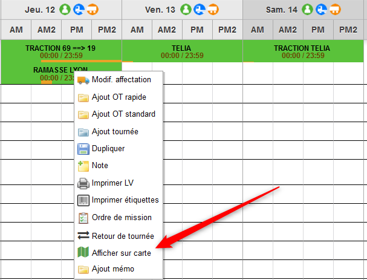
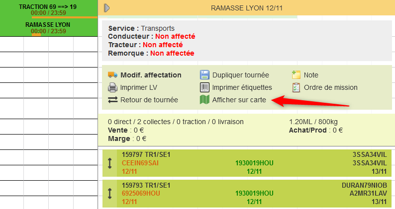
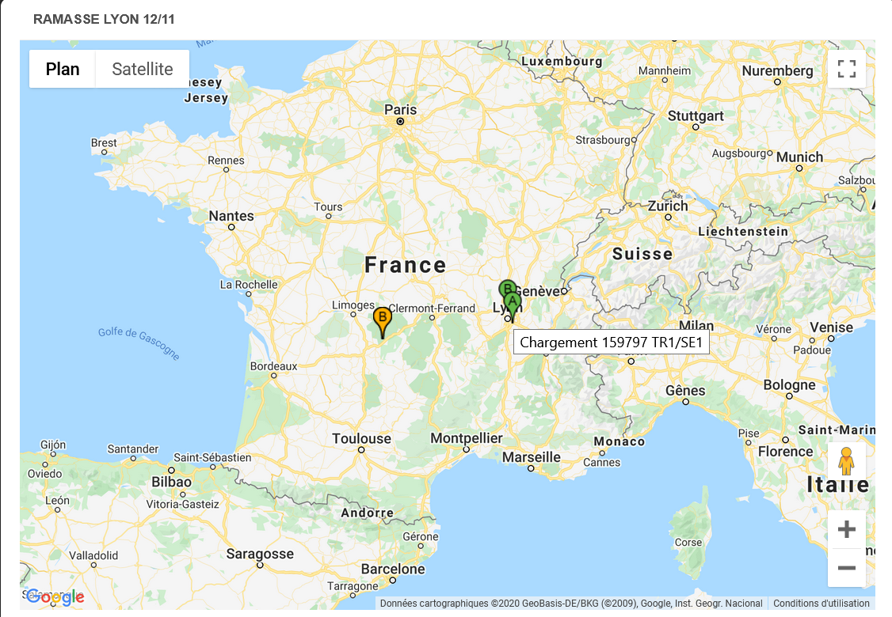
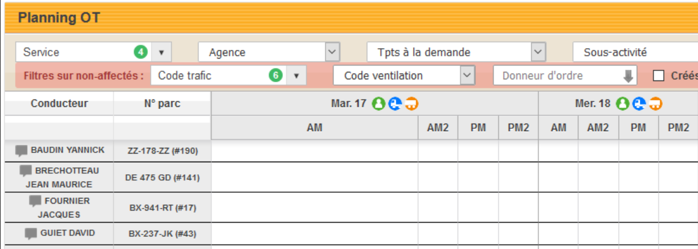
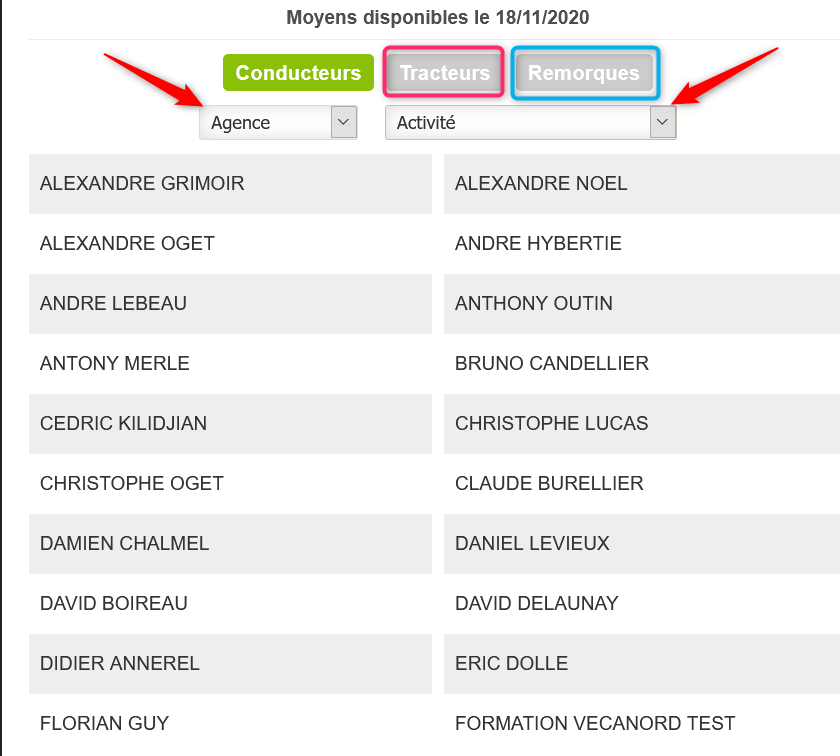

En faisant un clic droit sur la tournée :
Après avoir ouvert la pop-up de la tournée :
Visuel de la carte : en vert les points de chargement et en orange de déchargement
En vert, les conducteurs disponibles
En bleu, les tracteurs disponibles
En orange, les remoques disponibles
En cliquant sur l’icône conducteurs disponible, vous ouvrez une fenêtre : vous visualisez les conducteurs disponibles et vous pouvez choisir l’agence et l’activité. Depuis cette pop-up, vous pouvez voir les tracteurs et remorques disponibles.
Pour qu'un moyen soit considéré comme "disponible" sur une journée, il faut qu'il ne soit lié à aucun transport, tournée, ordre de réparation ou absence sur cette journée. Il ne sera pas listé sinon.